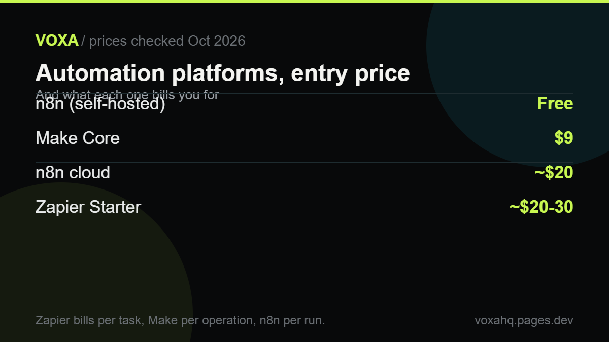

Zapier vs Make vs n8n: which one should you use?

Quick answer
Zapier is fastest to set up, Make is the best value for branching logic, and n8n is cheapest at volume if you can host it.
- Zapier bills per task and counts every step, so a five-step workflow running 10,000 times is 50,000 tasks.
- Make bills per operation and starts at $9/mo for 10,000 operations.
- n8n self-hosted is free and bills per workflow run, not per step.
- App coverage: Zapier 7,000+, Make 3,000+, n8n 400+ official nodes.
All three of these tools will connect your apps and save you hours. The difference only shows up when a workflow runs thousands of times a month, and then it shows up on your bill. That's the part nobody puts in the comparison table.
Short version first: Zapier is the fastest to set up and the most expensive as you grow. Make is the best value if your workflows branch. n8n is the cheapest at volume, but only if someone can look after it.
| Zapier | Make | n8n | |
|---|---|---|---|
| Free plan | 100 tasks a month, single-step only | 1,000 operations, 2 active scenarios | Unlimited if you host it yourself |
| Paid from | About $20-30 a month | $9 a month | About $20 a month, or free self-hosted |
| What counts as one unit | Every step in a Zap | Every module that runs | Every workflow run |
| Apps | 7,000-9,000+ | 3,000+ | 400+ official, 2,000+ with community |
| Self-hosting | No | No | Yes |
The billing thing that catches everyone
Picture one small workflow: a form comes in, you clean the data, add a row to a sheet, send an email, and post to Slack. Five steps.
On Zapier, that's five tasks per run. Run it 10,000 times a month and you've used 50,000 tasks, which puts you on a plan built for companies, not solo operators.
On Make, it's 50,000 operations, but operations are cheap at that level.
On n8n, it's 10,000 runs. If you're self-hosting, it costs you nothing extra.
Same workflow, wildly different bills. That's why you'll see one person say Zapier costs $30 and another say $400. Both are telling the truth.
Zapier: pay for speed
Nothing beats it for getting two apps talking in ten minutes, and its app library is the biggest by a mile. If you're not technical and your workflows are short, this is the one to pick.
The catch is volume. Tasks add up fast, and there's no version you can host yourself when the bill gets silly.
Make: the value pick
Make's canvas is built for the messy middle: branches, filters, loops over line items, error handling. At $9 a month for 10,000 operations it's almost a rounding error next to Zapier, and the AI modules are built in rather than tacked on.
If your automation has conditions in it, start here.
n8n: for people who can maintain it
n8n is the only one you can run on your own server. Because it bills per run instead of per step, a twelve-step workflow costs the same as a two-step one. Its AI agent tools are the deepest of the three.
Here's the honest part: self-hosting means updates, backups, and someone to fix it on a Sunday. If nobody on your team wants that job, the free version isn't actually free.
Pick in one line
- Two apps, no code, today: Zapier.
- Branching logic on a small budget: Make.
- High volume, AI agents, or data that can't leave your servers: n8n.
Building a writing or publishing pipeline instead? Start with the AI writing tools guide and come back here for the platform that moves the output.
One note: AI pricing moves fast. We read these numbers off the vendors' own pricing pages in October 2026, so check the current price before you buy.
Where to check the current price
These are the official pages we read while writing this guide. Plain links, no tracking, no middlemen. If a number here ever disagrees with what you see, trust their page and tell us so we can fix it.
Frequently asked questions
Is n8n actually free?
The self-hosted version is, and it has no execution limit. You still pay for a server and your own time to keep it running. Cloud plans start around $20 a month.
Why does Zapier get expensive?
It bills per task and counts every step. A five-step automation running 10,000 times a month is 50,000 tasks. Make bills per operation and n8n per run, so multi-step workflows cost less there.
Which one is best for AI agents?
n8n, by some distance. It has agent nodes, vector database connectors and MCP support built in. Make is second. Zapier is fine for simple AI steps but treats AI as an add-on.
Do I need to code?
Not for Zapier, and mostly not for Make. n8n is usable without code for simple flows, but anything real tends to need a bit of JavaScript.
Can I move my workflows somewhere else later?
Not automatically. You rebuild the logic, usually a day or two for a dozen workflows. Keep the old ones running until the new ones have gone a full month without errors.